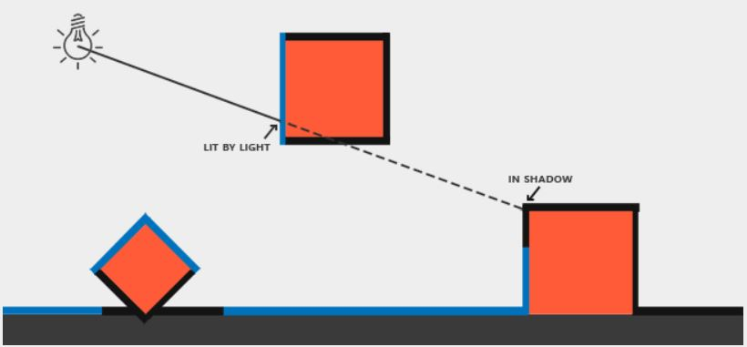
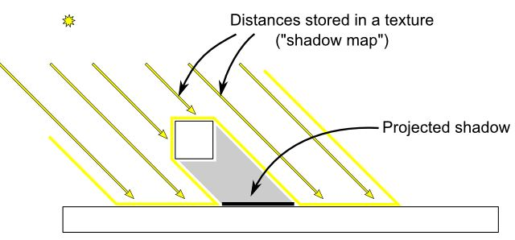
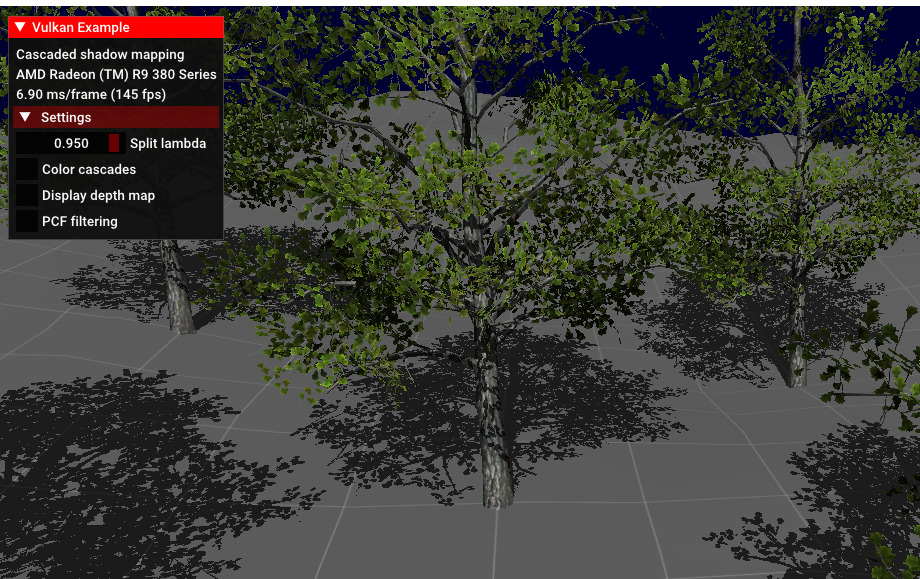
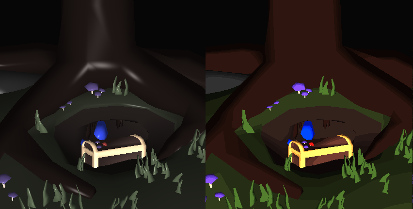

Objetivo
Indagar más a profundidad sobre los modelos de iluminación y el mapeo de texturas usando la API de Vulkan como herramienta para su implementación puesto que representa una tecnología novedosa de alto desempeño que brinda opciones más elaboradas para la manipulación de hardware por parte de los desarrollaodres.
Vulkan
Vulkan es una API de gráficos (tanto 2D como 3D) de nueva generación que provee alta eficiencia y desempeño, da acceso multiplataforma a las GPUs modernas usadas en una gran variedad de equipos desde PCs y consolas hasta teléfonos móviles y plataformas embebidas.
Su principal ventaja es dar la posibilidad de manipular el hardware de forma más profunda. A comparación de OpenGL, reduce el "API overhead" que es el trabajo que hace la CPU interpretando la GPU; esto proporciona al hardware menos sobrecarga y más tiempo para gastar en otros procesos importante que ayudan a su desempeño. Además es posible manipular la GPU de formas que no son posibles en OpenGL. Adicionalmente, proporciona un gran soporta multiplataforma desde móvil hasta PC y consolas.
Fue anunciada por primera vez en la GDC de 2015 por el grupo Khronos, los desarrolladores de OpenGL. Inicialmente, como "la iniciativa OpenGL de próxima generación".
Gracias a Vulkan, ahora es posible ejecutar varios procesos como cálculos de geometría 3D junto con procesos de trabajo computacional directamente, esto se conoce como computación asíncrona. Antes esto solo era posible mediante GPUs Radeon con arquitectura GNC, pero ahora mediante Vulkan se pueden hacer este tipo de cosas en diversas plataformas sin necesidad de usar Radeon y mejorando considerablemente el framerate.
Shadow Mapping
Las sombras son el resultado de la ausenncia de la luz debido a la oclución. Cuando los rayos de luz de la fuente De iluminación no tocan un objeto X porque éste está ocluido por otro objeto Y, el objeto X está en las sombras. Pero, ¿cómo nos acercamos a esto en computaciónvisual? En el intento por responder está pregunta se encuentra el Shadow Mapping.
Shadow Mapping es una técnica de iluminación que trabaja con la distancia existente entre la fuente de luz y los objetos que irradia. La idea detras de Shadow Mapping es simple: se renderiza la escena desde el punto de vista de la luz; todo lo que se ve desde esta perspectica está iluminado y aquello que no se ve, no lo está (está en las sombras). Para esto, se compara el punto donde el rayo de luz primero toca un objeto (punto más cercano a la fuente de luz) con otros puntos en este rayo. Si luego de la comparación la posición del rayo en el punto de estudio está más alejado que la posición del rayo en el punto más cercano, el punto de estudio debe estar en las sombras. Pero iterar y recorrer todos los posibles puntos con los muchos rayos de luz es ineficiente. Es acá donde entre en juego el Shadow Map.
Las lineas azules representan los fragmentos donde la luz se puede ver. Las lineas negras, aquellos que están en las sombras.
El Shadow Map (también llamado Depth Map), es una textura que guarda todos los valores de profundidad (que van desde 0 hasta 1, siendo 1 el mas lejano), obtenidos al renderizar la escena desde el punto de vista de la luz. Con esto, se puede calcular si un fracmento está en las sombras o no.
Ilustración del Shadow Map, y cómo se diferencian las sombras
Se puede decir, entonces, que el Shadow Mapping consiste de dos pasos:
- Primero, se renderiza el shadow map. Debido a que este solo contiene datos de profundidad de baja precisión (dejando a un lado el color), el tiempo de renderizado es 2 veces mayor que el de un renderizado normal.
- Luego, se renderiza la escena normalmente y se usa el shadow map generado para calcular los fragmentos que están en las sombras.
Ejemplo
Iluminación Phong
El modelo de iluminación Phong, o modelo de reflexión Phong, o simplemente Phong Lighting es un modelo empírico de iluminación local de puntos sobre una superficie (1973). Este describe el comportamiento de la reflexión de la luz sobre una superficie expresada como una combinación de un término ambiental, término difuso (reflexión difusa) y un término especular (reflexión especular).

Ecuación Iluminacion Phong

Iluminacion Phong
Para el ejemplo como podemos ver es una imagen bastante opaca y lo es porque se realiza un proceso de desaturación del color por el cual se le asignara a la luz.

Iluminacion Phong a la izquierda, malla de la textura a la derecha
Se aumenta el color de la luz ambiental respecto a la luz difusa y espectacular porque la malla de la textura que se esta usando es muy oscura.

Codigo para la iluminación Phong
Iluminación Toon
Es un estilo de iluminación creado para parecerse al estilo de animación Ánime combinando ilumiación difusa y especular para generar un efecto de sombreado por capas contrastantes.
En este caso, en el ejemplo, se implementó mediante un vertex y un fragment shader. En el vertex Shader, de forma similar al vertex shader de iluminación Phong, se usan buffers para manejar los datos de entrada y de salida haciendo uso de un UBO(uniform buffer object) para guardar matriz de pryección, de luz y del objeto en si; se usaron layouts para guardar color, pocisión, vector normal, color y las salidas del vector normal, vector de vista, vector de color y vector de luz como tal.
Se calculan el vector normal de salida dependiendo de la matriz del objeto como tal y el vector normal de entrada, la pocisión de la luz para luego calcular el vector de luz de salida y el vector de vista (respectivo a la perspectiva de la que se ve) se calcula como el vector en la dirección opuesta de la multiplicación de la matriz del objeto con la pocisión de entrada. El color de salida se toma como igual al de entrada.
En la imagen se ve ilumiación phong a la izquierda y toon a la derecha.
En el fragment shader se reciben, mediante layouts, el vector normal, de luz, de vista o perspectiva y el vector de luz, la salida en este caso será el color del fragmento como tal.
Se desatura el color y se calcula la iluminación ambiental que se tomará como 1, se normalizan los vectores de entrada para que sean unitarios mientras que se toma al vector de reflección como una interpolación entre vector de dirección opuesta al de luz y el vector normal. Inicialmente la iluminación difusa será el punto entre el vector normal y de luz, la iluminación especular será la potencia entre el punto del vector reflexión y el vector de la perspectiva elevado a la 16 y multiplicado por 0.75, se hace para dar un efecto más contrastante a comparación de la iluminación phong. El color de salida por ahora será la suma de estas 3 iluminaciones dándole un peso mayor a la difusa.
Finalmente se calcula un valor de intensidad que será el punto entre el vector normal y de luz. Dependiendo de esta intensidad se va a multiplicar el sombreado en el color de salida mapeando valores entre 0.75 y 0.25 dando como resultado que el sombreado tenga ciertos contrastes a manera de capas cuando el objeto en cuestión sea afectado por la luz.
Conclusiones
ASD